Boolean Modifier¶
The Boolean modifier performs operations on meshes that are otherwise too complex to achieve with as few steps by editing meshes manually. The Boolean modifier uses one of three Boolean operations that can be used to create a single mesh out of two mesh objects:
| Difference: | Negation |
|---|---|
| Union: | Conjunction |
| Intersect: | Disjunction |
The Union, Intersection and Difference between a Cube and a UV Sphere, with the modifier applied to the Sphere and using the cube as target.
Note
- The Boolean modifier works with open and closed volumes.
- The Boolean modifier doesn’t work on edges without faces.
- The target topology determines the new topology of the modified mesh.
- The face normals are taken into account for the calculations.
- Whether faces are marked for smooth or flat for shading doesn’t affect the calculations of this modifier.
- The line at which this modifier is calculated is delimited by the first tangential contact between faces of the modified mesh and target.
Tip
This is a dynamic real-time modifier!
If you have marked your Objects to show the Edges (in , enable Wire), you will see the Edge creation process while you’re moving your Objects. Depending on your mesh topology, you can also enable X-Ray and Transparency and see the topology being created in real time.
用法¶
To use the Boolean Modifier select the desired mesh Object then add a Boolean modifier. When you add the Boolean modifier for an object, Blender will need a second object to be the target of the operation. You can use open or closed meshes, as long as they have available face normals for the calculations to take effect. You can add one or more modifiers of this type for an Object but you can only apply one operation for the Boolean modifier at a time.
Options¶
Boolean Modifier Options.
操作¶
- Operation
Which boolean operation will be used.
- Difference
The modified mesh is subtracted from the target mesh.
- If the target Mesh has inverted normals, Blender will Intersect the modified mesh.
- If the modified Mesh has inverted normals, Blender will add both meshes (Union).
- If both 网格 use inverted normals, Blender will Intersect the target Mesh.
- Union
The target mesh is added to the modified mesh.
- If the target Mesh has inverted normals, Blender will Intersect the target Mesh.
- If the modified Mesh has inverted normals, Blender will subtract the target Mesh.
- If both 网格 use inverted normals, Blender will Intersect the modified Mesh.
- Intersect
The target mesh is subtracted from the modified mesh.
- If the target Mesh has inverted normals, Blender will subtract the target Mesh.
- If the modified Mesh has inverted normals, Blender will intersect the target Mesh.
- If both 网格 use inverted normals, Blender will add both meshes (Union).
- Object
- The name of the target mesh object.
Materials¶
The Boolean modifier preserves the Materials of the participant 网格, including their basic textures and mappings, and the modified mesh will receive its first active material index assigned to its new topology (the first active material).
Below, some examples are shown to exemplify how materials work with the Boolean modifier; we took the cube as the modified mesh, and the icosphere as the target with one material (white). We added four different indexes to one of the faces of the cube, leaving another basic material in the other faces. The top left image shows how the Boolean modifier interacts with the materials. The other three images show the three different Boolean operations applied to the modified mesh. In all the images the meshes have normals pointed outwards with the Icosphere as the target, and the Cube being the modified mesh.
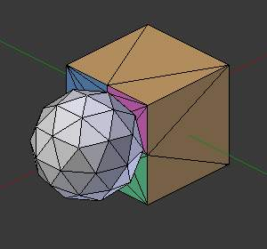
Cube with Multi-Materials and Icosphere with basic Material. |
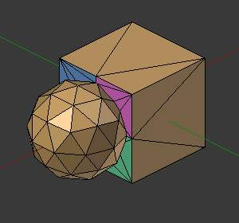
Union: The first active Material of the Cube is added to the new topology. |
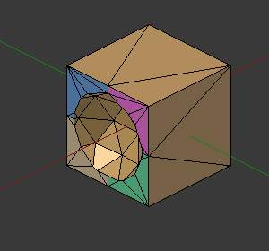
Difference: The Icosphere was subtracted from the Cube. |
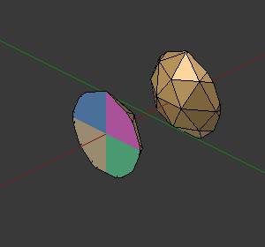
Intersect: The resulting Mesh was copied and rotated 180. |
The only exception is the difference operation when the normals of the target and modified mesh are inverted. In this case, Blender will project the textures in an inverted direction over the target using the center contact of the meshes as a pivot and the resulting mesh will have the modified mesh subtracted from the target. For complex target meshes in some particular cases, you may have to reassign materials to faces because Blender will use the possible projection, and this may result in a sub-optimal texture assignment. You can see this in the last example below.
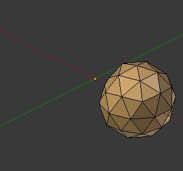
Front of the target with the modified mesh materials. |
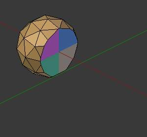
Back of the target with the modified mesh materials. |
UV Mappings¶
When you map UV 图像s to your target, Blender will add a map for each of the faces of the target. When you apply the Boolean modifier, Blender will follow the UV maps already assigned to the faces of the target topology that will be the result of the operation on the modified mesh. Blender will also use the same image mapped to the target faces in the modified mesh.
Warning
Depending on the way you have assigned textures to the faces during the UV unwrap, and the complexity of your meshes, the boolean operation may generate imperfect UVs for the new faces.
Below we have four 图像s, a UV sphere mapped with a test grid tinted blue and the other face tinted in purple, one face of the cube tinted in a light orange and the other faces using the normal test grid. The first image shows the operation at the start (difference), and on to the right of that shows the resulting mesh. And in the bottom row we show the unwrap in the Blender UV/图像编辑器.
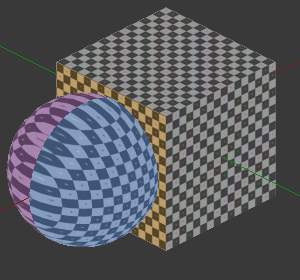
A UV Sphere and a Cube with different UV Maps. |
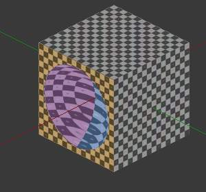
Difference operation applied. |
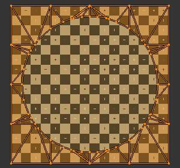
Faces of the modified mesh mapped. |
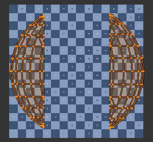
New topology mapped and UV faces assigned. |
其他 修改器¶
The Boolean modifier calculation is performed using the target modified mesh topology and dimensions. 其他 modifiers added to the modified mesh are bypassed. This means that if a target is using another modifier, like subsurf, the resulting topology for the modified mesh will take into account the subsurf of the target; but for the modified mesh, the basic topology is used anyway (see examples).
If you add subsurf to the modified mesh with a Boolean modifier, Blender will visually add the subsurf for the modified mesh, but not for its calculations; it will only take into account its basic mesh topology. If you want to have a subsurf added to the modified mesh, you have to apply the subsurf to the Boolean modified mesh before applying the Boolean operation.
The Boolean modifier can be added together with other modifiers in the modified mesh,
but depending on the modifier, the calculations cannot be done and/or the modifier cannot execute.
When the modifier cannot execute, it will show the message "Cannot execute boolean operation",
and when the modifier cannot be applied to the mesh,
Blender will show the message "Modifier is disabled, Skipping Apply.".
In this case, you either have to remove some modifiers or apply the necessary ones.
Boolean Modifier with error message.
The most common case is when you add or copy a Boolean modifier to use the modified mesh in conjunction with another target later; Blender will place the warning in the subsequent Boolean modifiers in the stack depending on the operation, because you may be creating concurrent Boolean operations for the same modified mesh, which in most cases is impossible to execute depending on the chosen target. In this case, you can apply the first Boolean modifier of the stack for the target and then use the other Boolean modifier(s) in the stack for subsequent operations.
Also, if some other modifiers are placed above this modifier and you click on Apply,
Blender will warn you with the message "Applied Modifier was not first,
results may not be as expected". The best usage scenario for this modifier is to
prepare your modified mesh and target to work with the Boolean modifier.
When the Boolean modifier is the first of the stack and is applied, the other 修改器 will act over the resulting meshes using the resulting topology and will remain in the modifiers stack.
Below are two images: one with the subsurf added to the target, and another with the resulting topology.
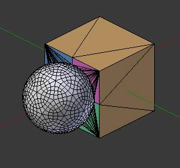
Modifier with Subsurf Target. |
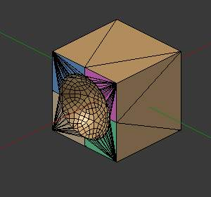
The Resulting Topology. |
As you can see, the added (not applied) subsurf to the target was taken into consideration. The topology of the Icosphere with subsurf (Level 2) was completely transferred to the modified mesh.
Tip
The target topology determines the resulting topology
The target topology determines the results of the Boolean modifier operation. It means that any modifier added to the target which modifies its topology will affect the resulting mesh of the operation.
Concurrent 操作¶
For the modified meshes, you can only apply one operation at a time, but you can use the same target for other modified meshes and use modified meshes as a target for other meshes as well. Also, you can copy or add the same modifier to the modifiers stack as many times as you wish to suit the number of operations you need, but be aware that if you choose concurrent targets which are, at the same time, modified meshes pointing to each other, you can cause Blender to crash with closed loops!
Hints¶
Be aware that other modifiers and their stack position could cause this modifier to fail in certain circumstances.
Tip
The best way to work with this modifier when you need to make lots of sequential operations of the same modifier is to define the target at the time you need to apply the changes to the topology.
Face Normals¶
When using the Boolean modifier, Blender will use the face normal directions to calculate the three Boolean operations. The direction of the normals will define the result of the three available operations. When one of the participants has inverted normals, you’re in fact multiplying the operation by -1 and inverting the calculation order. You can, at any time, select your modified mesh, enter 编辑模式 and flip the normals to change the behavior of the Boolean modifier. See Tips: Fixing Mixed Normals below.
Blender also cannot perform any optimal Boolean operation when one or more of the mesh Normals of the participants that are touching has outwards/inwards normals mixed.
This means you can use the normals of the meshes pointed completely towards the inside or outside of your participants in the operation, but you cannot mix normals pointed inwards and outwards for the faces of the topology used for calculations. In this case, Blender will enable the modifier and you may apply the modifier, but with bad to no effects. We made some examples with a cube and an icosphere showing the results.
In the images below, all face normals are pointing outwards (Normal meshes).
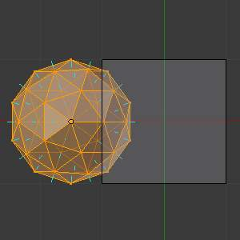
Faces with normals pointing outwards. |
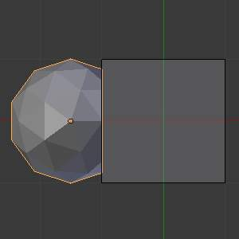
Normal Boolean modifier operation (Difference operation). |
In the images below, all face normals are inverted and using the intersection operation
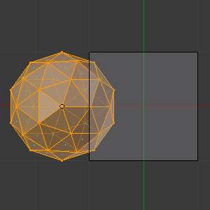
Boolean Operation with inverted normals. |
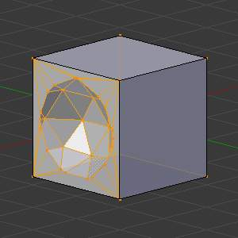
Normal Boolean modifier operation. |
Now, let us see what happens when the normal directions are mixed for one of the participants in the Boolean modifier operation. The images below show face normals mixed, pointed to different directions and the resulting operation, you can see that the modifier has bad effects when applied, leaving faces opened:
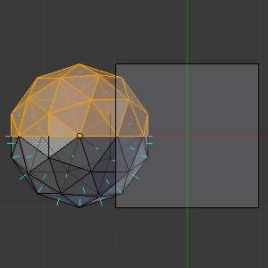
Face normals mixed, pointed to different directions. |
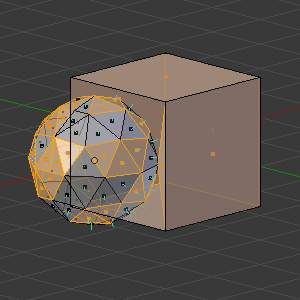
Resulting operation leaves faces opened. |
As you can see, the normal directions can be pointing to any of the Mesh sides, but cannot be mixed in opposite directions for the faces of the participants. The Library cannot determine properly what’s positive and negative for the operation, so the results will be bad or you will have no effect when using the Boolean modifier operation.
A quick way to fix this is to use Blender’s Recalculate Normals operation in 编辑模式.
If you still have some ugly black gouges you will have to Manually Flip the Normals.
Empty or Duplicated Faces¶
This modifier doesn’t work when the modified and/or the target mesh uses empty faces in the topology used for calculations. If the modifier faces a situation where you have empty faces mixed with normal faces, the modifier will try, as much as possible, to connect the faces and apply the operation. For situations where you have two concurrent faces at the same position, the modifier will operate on the target mesh using both faces, but the resulting normals will get messed. To avoid duplicated faces, you can remove doubles for the vertices before recalculating the normals outside or inside. The button for remove doubles is located in the Mesh Tools Panel in the 3D视图, while in 编辑模式.
The best usage scenario for this modifier is when you have clean meshes with faces pointing clearly to a direction (inwards/outwards)
Below we show an example of meshes with open faces mixed with normal faces being used to create a new topology. In this example, a difference between the cube and the icosphere is applied, but Blender connected a copy of the icosphere to the Cube mesh, trying to apply what was possible.
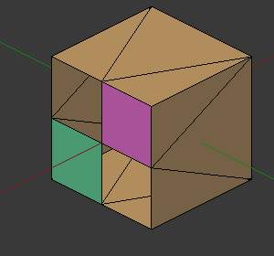
Mesh with two empty faces mixed with normal faces. |
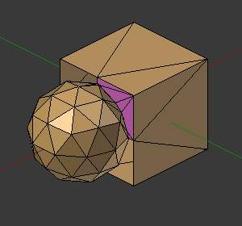
Result of a difference operation applied. |
Open Volumes¶
The Boolean Modifier permits you to use open meshes or non-closed volumes (not open faces).
When using open meshes or non-closed volumes, the Boolean modifier won’t perform any operation in faces that do not create a new topology filled with faces using the faces of the target.
In the images below, is the resulting operation when using two non-closed volumes with faces forming a new topology.
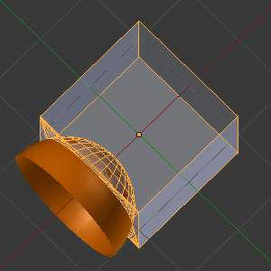
Non-closed volumes forming a new topology. |
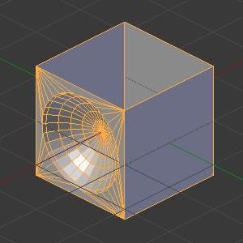
Resulting operation using two open volumes. |
Now, let us see what happens when we use meshes that are partially open, incomplete, or meshes that are not forming a new topology.
As you can see in the images below the faces of one participant in the Boolean operation gives incomplete information to the modifier. The resulting edges get messy and there is not enough information to create faces for the resulting Mesh. This example uses a smooth shaded UVsphere cut in half. As explained before, the shading (smooth/flat) doesn’t affect the calculations of the modifier.
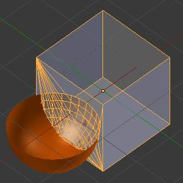
Open volumes that are not forming a new topology. |
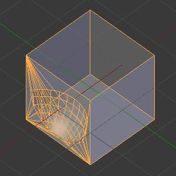
Resulting Operation of image on the left |